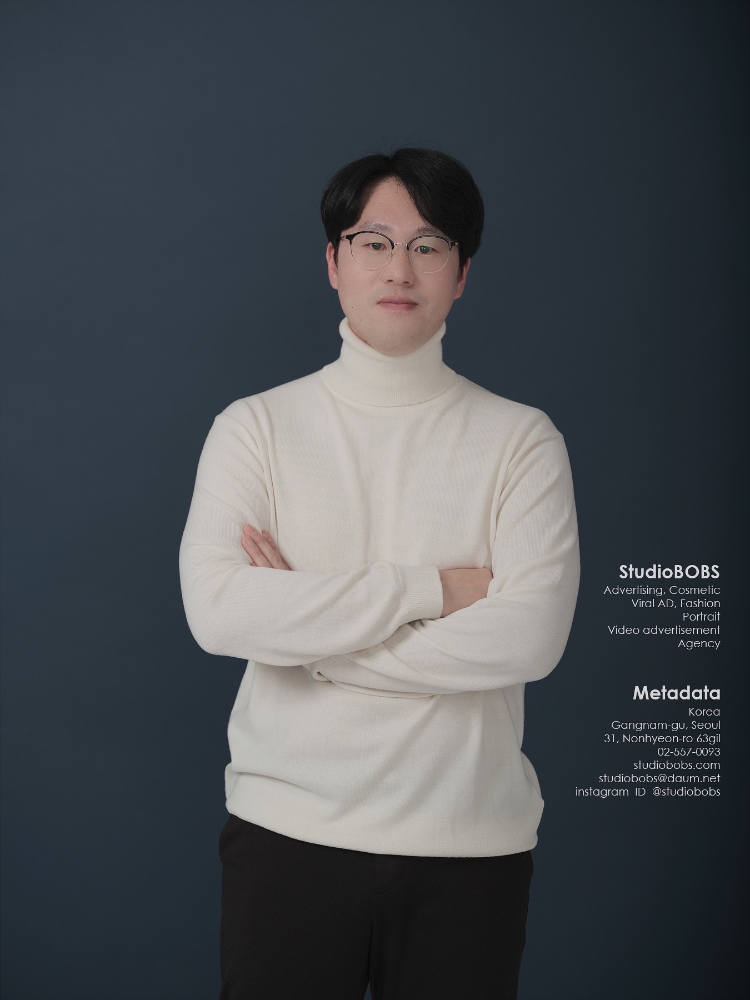

최대 손익(P&L) 개선
253%
관광 특수 MAU 증가
250%
최대 ROAS 개선
227%
전사 개설 실적 달성
1위
최대 손익(P&L) 개선
253%
총 경력
Years
최대 ROAS 개선
Data-driven 마케팅
최대 손익 개선
쏘카 지역 거점 최적화
MAU 최대 성장
타깃 프로모션 기획
단순한 실무를 넘어, 데이터 기반의 의사결정으로 비즈니스 임팩트를 창출한 과정입니다.
전략기획실 실장 (2025.07 ~)
AI 모빌리티 앱 및 신사업 총괄 리딩
마케팅팀 팀장 (2022.05 ~ 2023.04)
광고 효율(ROAS)
191%
가입자수(YoY)
160%
대시보드 ROI 개선
241%
경북사업팀 팀장 (2018.06 ~ 2020.08)
손익(YoY) 개선
253%
관광 특수 MAU
250%
목표 손익 방어
97%
2023.04 ~ 2025.07
신규 프랜차이즈 기획 총괄 및 전사 가맹점 맞춤형 타깃 프로모션 리딩. 24년 연매출 14억 증가 기여
2020.10 ~ 2022.05
Full-Funnel 트래킹 고도화로 ROAS 227%↑ 향상 및 B2B 병원닥터 개원 플랫폼 기획을 통한 매출 견인
2011.08 ~ 2018.06
데이터 기반 상권 분석 및 점포 개발. 놀부 영남권 신규가맹점 40개 오픈으로 2016년 전사 개설 1위 달성
단순한 기획안이 아닌, 수치로 증명되는 객관적인 성과를 지향합니다.
조직의 병목을 해결하고 귀사에 압도적인 비즈니스 임팩트를 창출할 준비가 되어 있습니다.
오프라인 점포 개발부터 모빌리티, B2B SaaS까지. SQL/BigQuery로 사업 전략을 세우고, Looker Studio로 앱을 개선하며, A/B 테스트로 광고 효율을 2배 이상 높여왔습니다. 직관이 아닌 철저한 데이터에 근거합니다.
기획이 실제 임팩트로 이어지려면 조율이 필수적입니다. 본사와 가맹점, 기획과 개발·영업 간의 'Hub' 역할을 수행했습니다. 루틴한 이슈를 매일 트래킹하고, Python/VBA로 보고를 자동화하며 사업이 멈추지 않게 뚫어냅니다.
사업 전략, 서비스 고도화, 마케팅 최적화. 이 3가지 기획 역량에 집요한 소통과 실행력이 더해질 때 비로소 성과가 나옵니다. 뜬구름 잡는 비전이 아닌, 수치로 증명되는 객관적인 결과만을 지향합니다.
데이터 기반의 기획과 압도적인 실행력으로 귀사의 비즈니스에 기여하겠습니다.